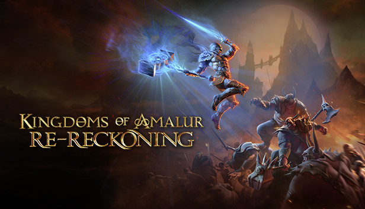

Kingdom Of Amalur
Kingdoms of Amalur: Reckoning é um RPG de ação para um único jogador para PC, PlayStation 3 e Xbox 360. Foi criado como um MMO, mas acabou se transformando em um RPG. Ken Rolston, o designer-chefe de The Elder Scrolls III: Morrowind e The Elder Scrolls IV: Oblivion, atua como o designer exclusivo do jogo. Além disso, o famoso autor de fantasia RA Salvatore criou o universo e a tradição do jogo, com Todd McFarlane, criador de Spawn , trabalhando na arte. Foi desenvolvido pela 38 Studios e Big Huge Games. O jogo foi lançado em 7 de fevereiro de 2012 na América do Norte e 10 de fevereiro de 2012 na Europa.